9.4. Pandas¶

O Pandas fornece duas estruturas de dados básicas: Series e DataFrame, ambas apoiadas na estrutura ndarray da biblioteca NumPy. Para estas estruturas, existem diversas operações de alto nível disponíveis, tais como: agregação de valores e visualização básica através da Matplotlib.
Um objeto do tipo Series representa um vetor (ou array unidimensional) capaz de armazenar qualquer tipo de dado, como números inteiros, strings ou objetos como data e hora. Uma série possui dois eixos (axis), um usado para rotular cada valor do vetor (linhas) e outro para rotular os valores da séries (colunas). Os rótulos do eixo-0 funcionam como um índice para os valores da série. O rótulo do eixo-1 se refere à coluna com os valores da série. A Tabela 9.3 apresenta as características dessa estrutura de dados. Repare que há um eixo numérico na primeira coluna, com valores no intervalo [0, 4], que forma a base de indexação dos valores da série (nomes de munícipio), e cuja coluna (eixo-1) possui um rótulo chamado municipio.
municipio |
|
|---|---|
0 |
Sítio Novo Do Tocantins |
1 |
Ouro Preto |
2 |
Mariana |
3 |
Araxá |
4 |
Belo Horizonte |
O segundo tipo de estrutura introduzido pelo Pandas é o DataFrame, que representa uma matriz bidimensional, mais parecida com uma tabela, com capacidade de lidar com tipos heterogêneos, conforme mostrado na Tabela 9.4. Essa estrutura possui eixos rotulados (linhas e colunas). O eixo-0, dos índices, refere-se à primeira coluna, com os rótulos no intervalo [0, 4]. Esses valores podem ser usados para acessar os elementos de cada linha. O eixo-1, das colunas, possui os rótulos: municipio, estado, regiao, pais, satelite, bioma, timestamp e satelite_r. Os rótulos do eixo-1 se referem à identificação das séries das colunas.
municipio |
estado |
regiao |
pais |
satelite |
bioma |
timestamp |
satelite_r |
|
|---|---|---|---|---|---|---|---|---|
0 |
Sítio Novo Do Tocantins |
Tocantins |
N |
Brazil |
NPP_375 |
Cerrado |
2016/02/12 17:05:45 |
f |
1 |
Sítio Novo Do Tocantins |
Tocantins |
N |
Brazil |
NPP_375 |
Cerrado |
2016/07/17 04:00:00 |
f |
2 |
Altamira |
Pará |
N |
Brazil |
AQUA_M-T |
Amazonia |
2016/01/15 16:40:14 |
t |
3 |
Altamira |
Pará |
N |
Brazil |
NPP_375 |
Amazonia |
2016/01/15 16:40:14 |
t |
4 |
Sítio Novo Do Tocantins |
Tocantins |
N |
Brazil |
NPP_375 |
Cerrado |
2016/02/12 17:05:45 |
f |
9.4.1. Usando o Pandas¶
Aviso
Essa nota de aula pressupõe que você esteja usando o código dentro do ambiente Jupyter Notebook.
Por convenção importamos as funcionalidades do Pandas da seguinte forma:
import pandas as pd
9.4.2. Criando uma Série¶
Vamos criar uma série semelhante aos dados apresentados na Tabela 9.3, porém com os índices representados pelas letras de a a e, conforme o trecho de código abaixo:
dados = [
'Sítio Novo Do Tocantins',
'Ouro Preto',
'Mariana',
'Araxá',
'Belo Horizonte',
]
indices = [ 'e', 'b', 'd', 'c', 'a' ]
serie = pd.Series(data=dados, index=indices, name='Municipios')
No ambiente de computação interativa do Jupyter, podemos apresentar os valores dessa série simplesmente criando uma célula com a seguinte expressão:
serie
Saída:
e Sítio Novo Do Tocantins
b Ouro Preto
d Mariana
c Araxá
a Belo Horizonte
Name: Municipios, dtype: object
9.4.3. Selecionando Valores da Série¶
Podemos utilizar a função head para obter valores da série a partir do seu início:
serie.head(2)
Resultado:
e Sítio Novo Do Tocantins
b Ouro Preto
Name: Municipios, dtype: object
A função tail permite obter valores ao final da série:
serie.tail(2)
Saída:
c Araxá
a Belo Horizonte
Name: Municipios, dtype: object
O operador [] (operador de indexação) permite acessar elementos específicos ou partes da série:
serie['a']
Saída:
'Belo Horizonte'
serie[0:3]
Saída:
e Sítio Novo Do Tocantins
b Ouro Preto
d Mariana
Name: Municipios, dtype: object
serie[-2:]
Saída:
c Araxá
a Belo Horizonte
Name: Municipios, dtype: object
O atributo loc permite acessar grupos de valores da série (linhas) através de rótulos ou por um array de valores lógicos:
serie.loc[ ['a','b'] ]
Saída:
a Belo Horizonte
b Ouro Preto
Name: Municipios, dtype: object
Vamos usar um array de valores lógicos para selecionar linhas alternadas da série através do atributo loc:
serie.loc[ [True, False, True, False, True] ]
Saída:
e Sítio Novo Do Tocantins
d Mariana
a Belo Horizonte
Name: Municipios, dtype: object
A propriedade iloc permite a seleção dos valores da série de maneira posicional, isto é, utilizamos números inteiros para especificar uma ou mais linhas a serem selecionadas. De maneira semelhante à propriedade loc, aceita um array de valores lógicos para seleção:
serie.iloc[ [1, 3] ]
Saída:
b Ouro Preto
c Araxá
Name: Municipios, dtype: object
9.4.4. Acessando a Estrutura de uma Série¶
Para acessar o eixo dos rótulos associados aos valores da série, utiliza-se o atributo index:
serie.index
Saída:
Index(['e', 'b', 'd', 'c', 'a'], dtype='object')
Os valores da série podem ser acessados na forma de um ndarray do NumPy através do atributo values:
serie.values
Saída:
array(['Sítio Novo Do Tocantins', 'Ouro Preto', 'Mariana', 'Araxá',
'Belo Horizonte'], dtype=object)
O retorno do atributo values é um numpy.ndarray, conforme podemos ver no exemplo abaixo:
type(serie.values)
Saída:
numpy.ndarray
9.4.5. Ordenando os Valores de uma Série¶
Podemos ordenar a série pelos seus valores através da operação sort_values:
serie.sort_values(ascending=True)
Saída:
c Araxá
a Belo Horizonte
d Mariana
b Ouro Preto
e Sítio Novo Do Tocantins
Name: Municipios, dtype: object
Ou, podemos ordenar a série pelos rótulos do índice dos valores:
serie.sort_index()
Saída:
a Belo Horizonte
b Ouro Preto
c Araxá
d Mariana
e Sítio Novo Do Tocantins
Name: Municipios, dtype: object
Note que as duas operações acima criam novas séries ordenadas. Para alterar a própria série, sem criar uma cópia, é necessário utilizar o parâmetro inplace:
serie.sort_values(ascending=True, inplace=True)
serie
Saída:
c Araxá
a Belo Horizonte
d Mariana
b Ouro Preto
e Sítio Novo Do Tocantins
Name: Municipios, dtype: object
9.4.6. Plotando uma Série¶
Podemos construir gráficos rapidamente a partir das séries. O tipo Series possui uma operação geral denominada plot. O trecho de código abaixo mostra como utilizar esta operação para apresentar um gráfico de barras com o número de focos de incêndio na vegetação ao longo do período de 2008 a 2017.
ano = [ 2008, 2009, 2010, 2011, 2012, 2013, 2014, 2015, 2016, 2017 ]
num_focos = [ 123, 123, 249, 133, 194, 115, 183, 236, 188, 260 ]
serie_focos = pd.Series(data=num_focos, index=ano, name='#Focos x Ano')
serie_focos
%matplotlib inline
import matplotlib.pyplot as plt
serie_focos.plot.bar()
Saída:
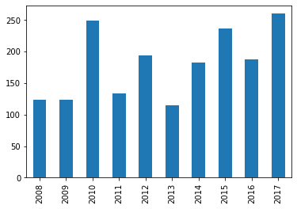{kind=link}
Nota
Por padrão, o Pandas utiliza a Matplotlib para gerar os gráficos. No entanto, é possível utilizar outras bibliotecas.
Nota
Consulte aqui outras opções de construção de gráficos a partir de uma série.
Nota
Para saber as demais propriedades e operações disponíveis para a estrutura Series, consulte a seguinte documentação: pandas.Series.
9.4.7. Criando um DataFrame¶
Para compreender a estrutura de um DataFrame, vamos criar um, baseando-se nos dados da Tabela 9.4. Iremos omitir algumas colunas dessa tabela de propósito, para que possamos acrescentá-las mais adiante.
municipios = [ 'Sítio Novo Do Tocantins', 'Sítio Novo Do Tocantins', 'Altamira', 'Altamira', 'Sítio Novo Do Tocantins' ]
estados = [ 'Tocantins', 'Tocantins', 'Pará', 'Pará', 'Tocantins' ]
satelites = [ 'NPP_375', 'NPP_375', 'AQUA_M-T', 'NPP_375', 'NPP_375' ]
biomas = [ 'Cerrado', 'Cerrado', 'Amazônia', 'Amazônia', 'Cerrado' ]
timestamp = [ '2016/02/12 17:05:45', '2016/07/17 04:00:00', '2016/01/15 16:40:14', '2016/01/15 16:40:14', '2016/02/12 17:05:45' ]
satelites_r = [ False, False, True, False, False ]
dados = {
'municipio': municipios,
'estado': estados,
'satelite': satelites,
'bioma': biomas,
'timestamp': timestamp,
'satelite_r': satelites_r
}
df = pd.DataFrame( data=dados )
Saída:
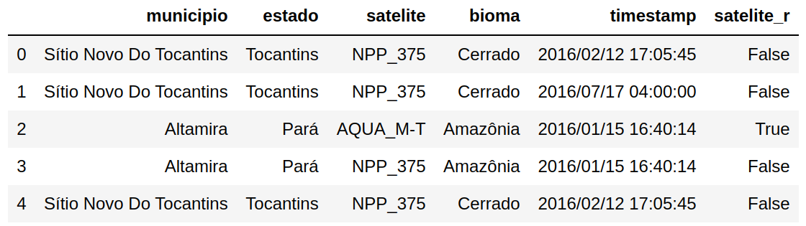{kind=link}
9.4.8. Selecionando Colunas de um DataFrame¶
Para selecionar os valores da primeira coluna, rotulada com a string municipio, podemos utilizar o operador [] (operador de indexação) como mostrado abaixo:
df['municipio']
Saída:
0 Sítio Novo Do Tocantins
1 Sítio Novo Do Tocantins
2 Altamira
3 Altamira
4 Sítio Novo Do Tocantins
Name: municipio, dtype: object
A mesma seleção pode ser realizada com o uso do operador .:
df.municipio
Saída:
0 Sítio Novo Do Tocantins
1 Sítio Novo Do Tocantins
2 Altamira
3 Altamira
4 Sítio Novo Do Tocantins
Name: municipio, dtype: object
Múltiplas colunas podem ser selecionadas. Podemos usar uma lista para especificar os rótulos das colunas desejada na seleção:
df[ ['municipio', 'satelite' ] ]
Saída:
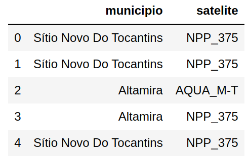{kind=link}
Podemos usar o método filter para selecionar colunas baseada em seus nome ou rótulos:
df.filter(like='sat')
Saída:
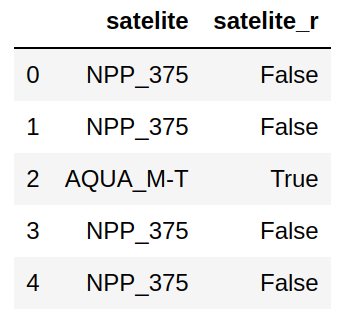{kind=link}
Nota
Além do parâmetro like, podemos usar uma expressão regular através do parâmetro regex.
9.4.9. Acessando a Estrutura de um DataFrame¶
Para acessar os índices ou rótulos das linhas, podemos utilizar a propriedade index:
df.index
Saída:
RangeIndex(start=0, stop=5, step=1)
Os rótulos das colunas podem ser recuperados através da propriedade columns:
df.columns
Saída:
Index(['municipio', 'estado', 'satelite', 'bioma', 'timestamp', 'satelite_r'], dtype='object')
Nota
Existe uma operação chamada keys() que retorna esse mesmo objeto Index.
O atributo values retorna uma representação numpy.ndarray, conforme podemos ver no exemplo abaixo:
df.values
Saída:
array( [ ['Sítio Novo Do Tocantins', 'Tocantins', 'NPP_375', 'Cerrado', '2016/02/12 17:05:45', False],
['Sítio Novo Do Tocantins', 'Tocantins', 'NPP_375', 'Cerrado', '2016/07/17 04:00:00', False],
['Altamira', 'Pará', 'AQUA_M-T', 'Amazônia', '2016/01/15 16:40:14', True],
['Altamira', 'Pará', 'NPP_375', 'Amazônia', '2016/01/15 16:40:14', False],
['Sítio Novo Do Tocantins', 'Tocantins', 'NPP_375', 'Cerrado', '2016/02/12 17:05:45', False]],
dtype=object)
Aviso
O documento de referência do Pandas recomenda o uso da operação to_numpy() ao invés da propriedade values.
O atributo axes retorna uma lista com os índices dos eixos do DataFrame:
df.axes
Saída:
[ RangeIndex(start=0, stop=5, step=1),
Index(['municipio', 'estado', 'satelite', 'bioma', 'timestamp', 'satelite_r'], dtype='object') ]
Podemos recuperar uma série com os tipos de dados de cada coluna. Nessa série, os índices serão os nomes das colunas e os valores, os tipos de dados de cada coluna:
df.dtypes
Saída:
municipio object
estado object
satelite object
bioma object
timestamp object
satelite_r bool
dtype: object
Nota
Quando o DataFrame contém colunas de tipos diferentes (mixed types), o tipo definido pelo dtype é object.
As dimensões do DataFrame podem ser obtidas através da propriedade shape:
df.shape
Saída:
(5, 6)
9.4.10. Selecionando Valores do DataFrame¶
A operação head permite obter valores do DataFrame a partir do seu início:
df.head(2)
Saída:
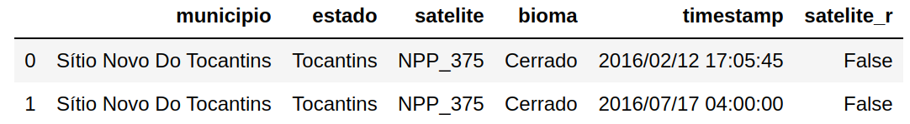{kind=link}
A operação tail obtém valores ao final do DataFrame:
df.tail(2)
Saída:
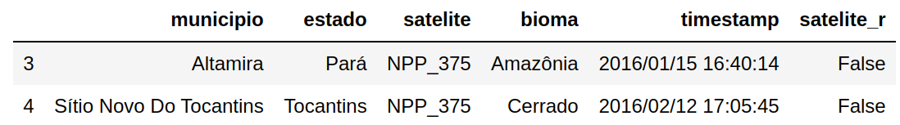{kind=link}
Assim como na estrutura Series, podemos utilizar as propriedades iloc e loc para acessar grupos de linhas e colunas.
O trecho de código abaixo utiliza a propriedade loc para recuperar os valores compreendidos entre as linhas 1 e 3, considerando apenas as colunas satelite e timestamp:
df.loc[ 1:3, [ 'satelite', 'timestamp' ] ]
Saída:
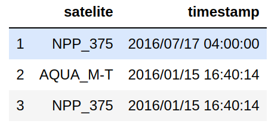{kind=link}
Nota
A propriedade loc utiliza os índices ou rótulos dos eixos das linhas e colunas como forma de endereçamento dos elementos. Já o operador iloc utiliza números inteiros correspondentes à posição dos eixos (linhas e colunas). No exemplo de DataFrame usado, os índices (rótulos) das linhas são números inteiros sequenciais e logo não há diferença na forma de acesso entre loc e iloc quando nos referimos às linhas desse exemplo. No entanto, para o eixo das colunas, temos diferença, conforme será visto abaixo.
Também podemos utilizar um array de valores lógicos nas propriedades loc e iloc. O trecho de código abaixo seleciona linhas alternadas do DataFrame:
df.loc[ [True, False, True, False, True], 'satelite':'timestamp' ]
Saída:
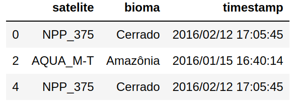{kind=link}
A propriedade iloc permite a seleção dos valores da série de maneira posicional, isto é, utilizamos números inteiros para especificar uma ou mais linhas e colunas a serem selecionadas. De maneira semelhante à propriedade loc, aceita um array de valores lógicos para seleção:
df.iloc[ [True, False, True, False, True], 2:5 ]
Saída:
Nota
Repare no exemplo acima que utilizamos um intervalo numérico (2:5) para definir as colunas que fariam parte do slice consultado.
9.4.11. Iterando nas colunas e linhas de um DataFrame¶
A operação items permite iterarmos nos conjuntos de valores de cada coluna, como se fossem uma série individual:
for rotulo, serie in df.items():
print(f'Série da Coluna: {rotulo}')
print(serie)
print('--------\n')
Saída:
Série da Coluna: municipio
0 Sítio Novo Do Tocantins
1 Sítio Novo Do Tocantins
2 Altamira
3 Altamira
4 Sítio Novo Do Tocantins
Name: municipio, dtype: object
--------
Série da Coluna: estado
0 Tocantins
1 Tocantins
2 Pará
3 Pará
4 Tocantins
Name: estado, dtype: object
--------
...
Série da Coluna: satelite_r
0 False
1 False
2 True
3 False
4 False
Name: satelite_r, dtype: bool
--------
O operador iterrows() permite iterarmos nas linhas do DataFrame como se fossem uma série:
for index, row in df.iterrows():
print(f'Série da Linha: {index}')
print(row)
print('--------')
Saída:
Série da Linha: 0
municipio Sítio Novo Do Tocantins
estado Tocantins
satelite NPP_375
bioma Cerrado
timestamp 2016/02/12 17:05:45
satelite_r False
Name: 0, dtype: object
--------
...
--------
Série da Linha: 4
municipio Sítio Novo Do Tocantins
estado Tocantins
satelite NPP_375
bioma Cerrado
timestamp 2016/02/12 17:05:45
satelite_r False
Name: 4, dtype: object
--------
Uma forma melhor de iterar nas linhas é através da operação itertuples:
for row in df.itertuples():
print(row)
Saída:
Pandas(Index=0, municipio='Sítio Novo Do Tocantins', estado='Tocantins', satelite='NPP_375', bioma='Cerrado', timestamp='2016/02/12 17:05:45', satelite_r=False)
Pandas(Index=1, municipio='Sítio Novo Do Tocantins', estado='Tocantins', satelite='NPP_375', bioma='Cerrado', timestamp='2016/07/17 04:00:00', satelite_r=False)
Pandas(Index=2, municipio='Altamira', estado='Pará', satelite='AQUA_M-T', bioma='Amazônia', timestamp='2016/01/15 16:40:14', satelite_r=True)
Pandas(Index=3, municipio='Altamira', estado='Pará', satelite='NPP_375', bioma='Amazônia', timestamp='2016/01/15 16:40:14', satelite_r=False)
Pandas(Index=4, municipio='Sítio Novo Do Tocantins', estado='Tocantins', satelite='NPP_375', bioma='Cerrado', timestamp='2016/02/12 17:05:45', satelite_r=False)
Nota
Repare que o índice da linha aparece como primeiro atributo da tupla retornada. Se informarmos o argumento index=False na operação itertuples, esse elemento será suprimido do resultado.
Nota
O parâmetro name pode ser usado para controlar o nome da tupla retornada, que por padrão utiliza o nome Pandas.
9.4.12. Construindo máscaras booleanas para seleção de linhas¶
Uma técnica útil para construir uma máscara de valores booleanos é utilizar expressões que retornem séries com valores booleanos:
df['timestamp'] > '2016/02/02'
Saída:
0 True
1 True
2 False
3 False
4 True
Name: timestamp, dtype: bool
Podemos usar uma expressão como acima para selecionar as linhas de um DataFrame:
df[ df.timestamp > '2016/02/02' ]
Saída:
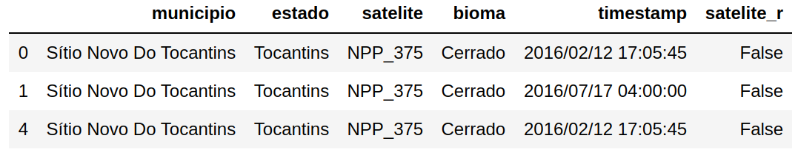{kind=link}
Nota
Para saber as demais propriedades e operações disponíveis para a estrutura DataFrame, consulte a seguinte documentação: pandas.DataFrame.
9.4.13. Leitura de Arquivos CSV¶
Para abrir um arquivo CSV basta utilizar a função read_csv:
patterns = pd.read_csv('data/defpatterns.missing.csv')
Aviso
Baixe o arquivo defpatterns.missing.csv.
Nota
O Pandas fornece diversas funções de entrada/saída. Consulte o seguinte documento para maiores informações: Input/output.
9.4.14. Análise de Dados com o Pandas¶
Vamos começar nossa análise, do conjunto de dados lido do arquivo defpatterns.missing.csv, por uma estatística descritiva:
patterns.describe()
Saída:
{kind=link}
A operação describe apresenta um sumário do conjunto de dados do DataFrame, mostrando sua tendência central, dispersão e forma. Essa operação cosidera apenas valores numéricos ou que possam ser transformados em valores numéricos, excluindo valores que não possam ser convertidos para números válidos. Veja que as colunas object_id0 e padrao não foram consideradas pela operação. Além disso, existe um valor especial chamado NaN (Not-a-Number) que indica a ausência de valor naquela célula (Figura 9.4).
{kind=link}
Na saída mostrada na Figura 9.3, podemos ver que o resultado da operação describe inclui um sumário por coluna:
count: Número de elementos da coluna com valores diferentes deNaN.mean: Média dos valores nas colunas.std: Desvio padrão dos valores nas colunas.min: Valor mínimo na coluna.max: Valor máximo na coluna.percentis: primeiro quartil (25% das observações abaixo e 75% acima), segundo quartil (mediana, deixa 50% das observações abaixo e 50% das observações acima) e terceiro quartil (75% das observações abaixo e 25% acima).
Q1. Quantos valores diferentes existem em cada coluna do DataFrame?
patterns.nunique()
Saída:
object_id0 1472
Col 46
Lin 32
c_AWetric 464
c_AWMetric 469
c_CAMetric 465
c_EDMetric 460
c_LSMetric 470
c_MPetric 464
c_MPetri_1 467
c_MPMetric 462
c_MSMetric 463
c_PDMetric 46
c_PentLand 464
c_PSMetric 406
c_PSetric 403
deci_class 5
padrao 6
dtype: int64
Nota
A operação nunique conta o número de observações distintas e retorna uma série com essa contagem. Por padrão, a contagem é realizada ao longo do eixo das linhas (axis=0 ou índice), como mostrado na saída acima. Podemos realizar a contagem no eixo da colunas usando o argumento axis=1.
Q2. Quantos valores diferentes existem para a coluna padrao?
patterns['padrao'].nunique()
Saída:
6
Para obter os valores únicos podemos utilizar a operação unique como mostrado abaixo:
patterns['padrao'].unique()
Saída:
array(['floresta', 'difuso', 'geometrico', 'linear',
'multidirecional', 'consolidado'], dtype=object)
Q3. Quantas linhas de cada padrao existem no DataFrame?
Nesse caso, precisamos realizar uma operação que agrupe as linha pelos valores da coluna padrao e então relize a contagem. O trecho de código abaixo utiliza o operador groupby para retornar um objeto que contém informação sobre grupos. Esse objeto é associado ao identificador grupo_linhas.
grupo_linhas = patterns.groupby(by='padrao')
grupo_linhas.count()
Saída:
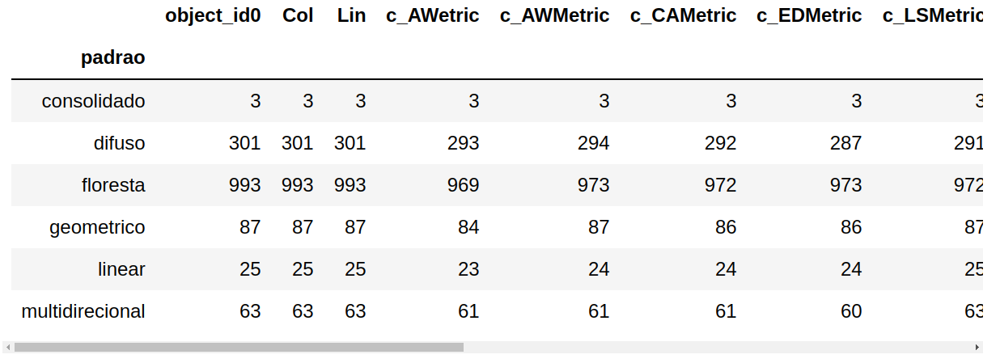{kind=link}
Se você estiver interessado na contagem apenas de uma das colunas, pode usar a seguinte estratégia:
grupo_linhas['padrao'].count()
Saída:
padrao
consolidado 3
difuso 301
floresta 993
geometrico 87
linear 25
multidirecional 63
Name: padrao, dtype: int64
Ou até mesmo usar a operação value_counts do tipo Series, como mostrado abaixo:
patterns['padrao'].value_counts()
Saída:
floresta 993
difuso 301
geometrico 87
multidirecional 63
linear 25
consolidado 3
Name: padrao, dtype: int64
Nota
A operação value_counts retorna uma série em ordem descendente, de maneira que o primeiro elemento é o que ocorre com maior frequência.
Nota
Para maiores informações sobre operações com objetos do tipo GroupBy, consulte a seguinte documentação.
Q4. Apresentar um gráfico de barras com a contagem de cada padrão:
%matplotlib inline
import matplotlib.pyplot as plt
contagem = grupo_linhas['padrao'].count()
contagem.plot(kind='bar');
Saída:
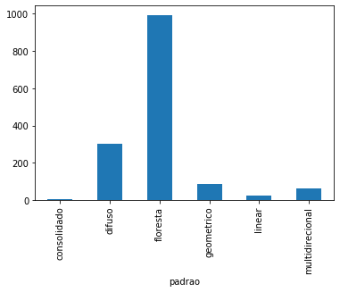{kind=link}
Q5. Qual é o valor mínimo em cada coluna?
A operação min aplicada a um DataFrame computa o valor mínimo para cada coluna:
patterns.min()
Saída:
object_id0 C00L00
Col 0
Lin 0
c_AWetric 0
c_AWMetric 0
...
c_MPetri_1 -13.5893
c_MPMetric 0
...
c_PSetric 0
deci_class 0
padrao consolidado
dtype: object
Se quisermos computar o valor mínimo para uma coluna específica, como por exemplo a coluna c_PSMetric, podemos fazer uma seleção e, então utilizar a operação min como mostrado abaixo:
patterns['c_PSMetric'].min()
Resultado:
0.0
Nota
No trecho de código acima usamos o operador [] para selecionar uma única coluna, o que resulta em um objeto do tipo Series:
Saída:
pandas.core.series.Series
Q6. Qual o valor minímo de cada coluna desconsiderando as linhas com valores de c_PSMetric diferentes de zero?
patterns[ patterns.c_PSMetric != 0 ].min()
Nota
Se estivéssemos interessados no valor mínimo apenas da coluna c_PSMetric considerando valores diferentes de zero, poderíamos usar a seguinte construção:
patterns[ patterns.c_PSMetric != 0 ]['c_PSMetric'].min()
Q7. Quantos valores estão faltando em cada coluna?
Os métodos isnull e notnull das estruturas de dados do Pandas possibilitam trabalhar a ocorrência de valores nulos. Essas duas operações retornam uma máscara booleana, como pode ser visto na saída dos comandos abaixo:
patterns.isnull()
Saída:
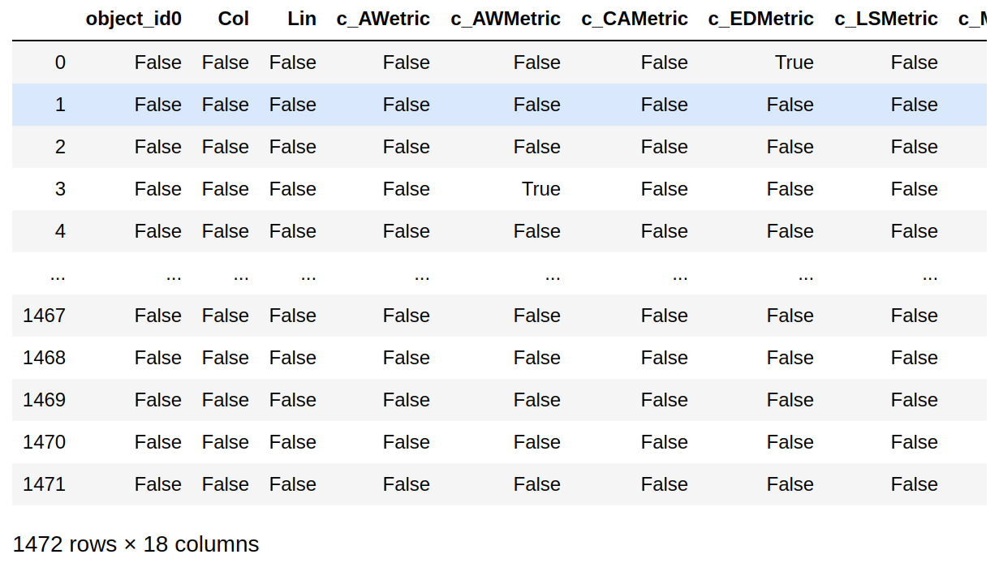{kind=link}
patterns.notnull()
Saída:
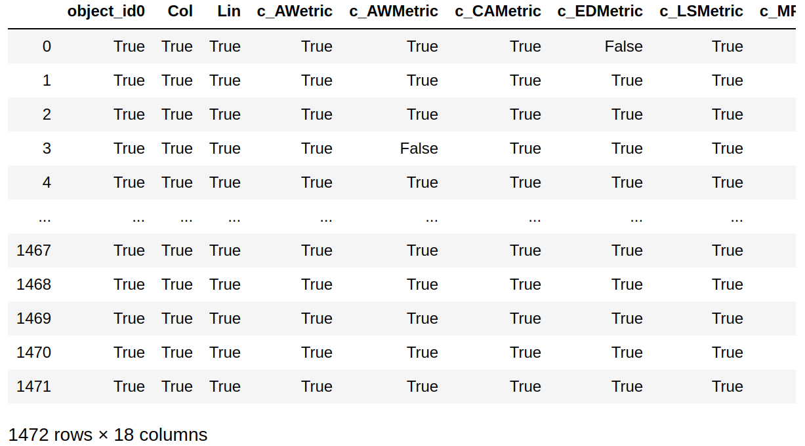{kind=link}
Para contar o número de células que não possuem valores em cada coluna, podemos utilizar a operação isnull para construir um DataFrame com valores booleanos e em seguida aplicar o operador sum, conforme mostrado abaixo:
patterns.isnull().sum()
Saída:
object_id0 0
Col 0
Lin 0
c_AWetric 39
c_AWMetric 30
c_CAMetric 34
c_EDMetric 39
c_LSMetric 31
c_MPetric 36
c_MPetri_1 40
c_MPMetric 48
c_MSMetric 38
c_PDMetric 32
c_PentLand 43
c_PSMetric 34
c_PSetric 48
deci_class 0
padrao 0
dtype: int64
Outra solução para realizar a contagem acima seria obter o número total de linhas do DataFrame, com a função len e, então, subtrair este valor da série contendo a contagem de valores diferentes de NaN em cada coluna.
Portanto, o número de linhas do DataFrame pode ser obtido com a seguinte expressão:
len(patterns)
Saída:
1472
A série contendo a contagem de valores diferentes de NaN em cada coluna pode ser obtida com a seguinte expressão:
patterns.count()
Saída:
object_id0 1472
Col 1472
Lin 1472
c_AWetric 1433
...
c_PSetric 1424
deci_class 1472
padrao 1472
dtype: int64
Combinando as duas idéias na expressão abaixo, obtemos a quantidade de células com NaN em cada coluna:
len(patterns) - patterns.count()
Saída:
object_id0 0
Col 0
Lin 0
c_AWetric 39
c_AWMetric 30
...
c_PSMetric 34
c_PSetric 48
deci_class 0
padrao 0
dtype: int64
Nota
Existem várias formas de computar algumas informações. O exemplo anterior ainda poderia ser computado com a seguinte expressão:
len(patterns.index) - patterns.count()
Q8. Quais as linhas que possuem NaN na coluna c_EDMetric:
patterns[ patterns['c_EDMetric'].isnull() ]
Saída:
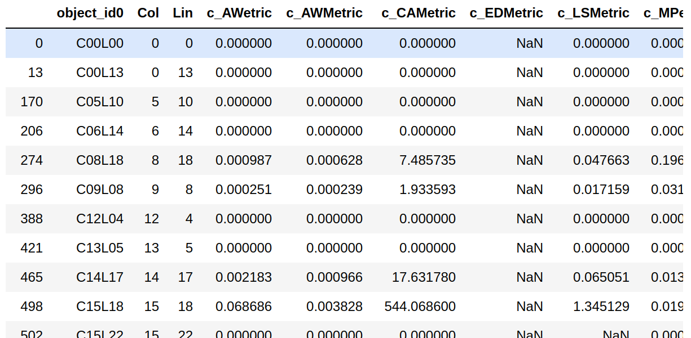{kind=link}
Q9. Quantas observações estão completas, isto é, não estão faltando valores?
Através da operação dropna podemos criar um novo DataFrame contendo apenas colunas que não contenham valores NaN:
ndf = patterns.dropna(axis=1)
ndf
Saída:
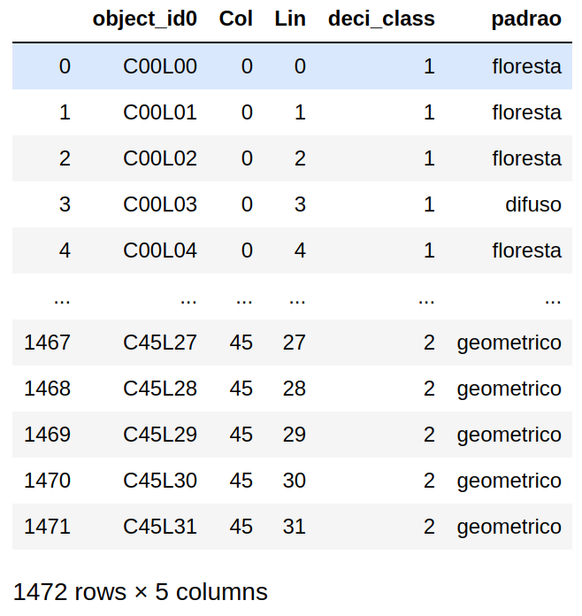{kind=link}
Q10. Quantas observações completas existem para cada valor de padrao?
No exemplo anterior, utilizamos a operação dropna ao longo do eixo-1, isto é, das colunas. Desta vez, usaremos a operação dropna para remover as linhas que contenham alguma observação com o valor NaN:
ndf = patterns.dropna(axis=0)
ndf['padrao'].value_counts()
Saída:
floresta 712
difuso 212
geometrico 63
multidirecional 39
linear 15
consolidado 3
Name: padrao, dtype: int64
Q11. Adicionar uma nova coluna chamada idx que seja o somatório dos valores das colunas Lin e Col:
patterns['idx'] = patterns['Lin'] + patterns['Col']
Como podemos observar na saída gerada pela expressão abaixo, a coluna idx foi adicionada ao nosso DataFrame:
patterns[:10]
Saída:
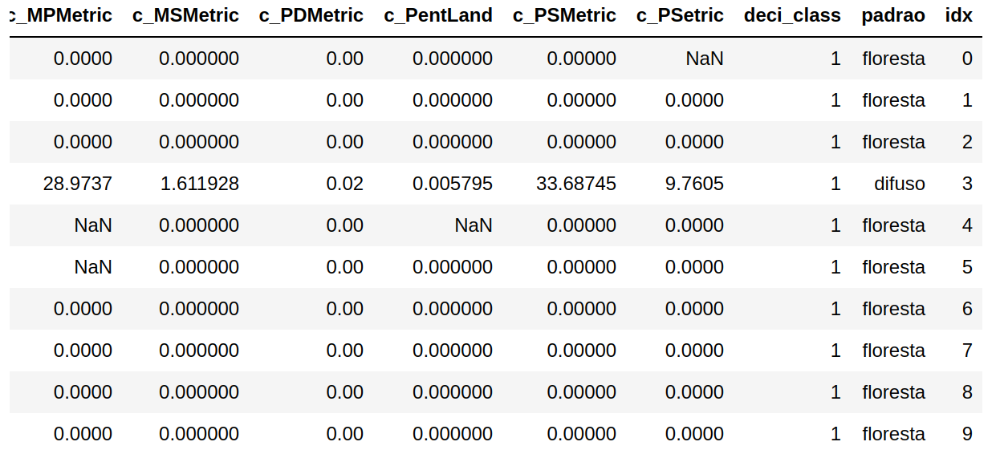{kind=link}
Q12. Copiar um DataFrame:
copia_df = patterns.copy()